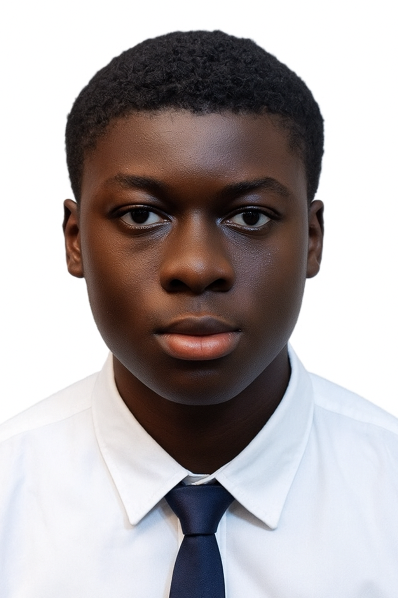

Augustine Mainoo | WDD 130
Hello! My name is Augustine Mainoo, and I am from Kumasi, Ghana. I am currently studying software development and have a strong passion for creating web applications and learning new technologies. My goal is to build user-friendly and innovative software that can make everyday life easier.
In my academic journey, I have enjoyed exploring programming languages, practicing coding projects, and understanding the fundamentals of web and software development. I am particularly interested in full-stack development, as it allows me to work on both the front-end and back-end aspects of applications.
Outside of my studies, I enjoy:
- Building small web and mobile projects
- Participating in online coding challenges and hackathons
- Learning about emerging technologies and frameworks
- Collaborating with other students on tech projects
I am committed to improving my skills continuously and aim to become a professional full-stack developer who contributes to the growth of technology in Ghana and beyond.